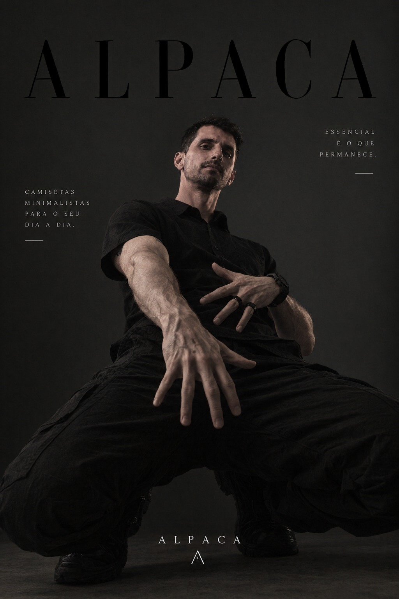
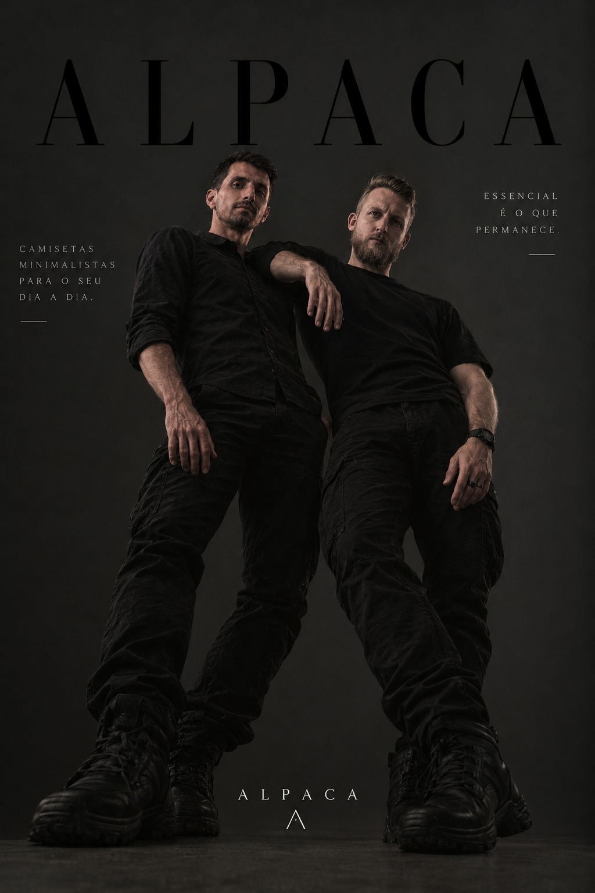
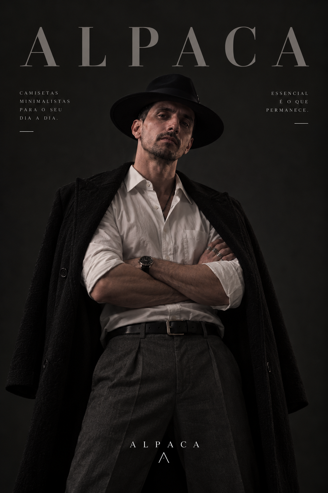
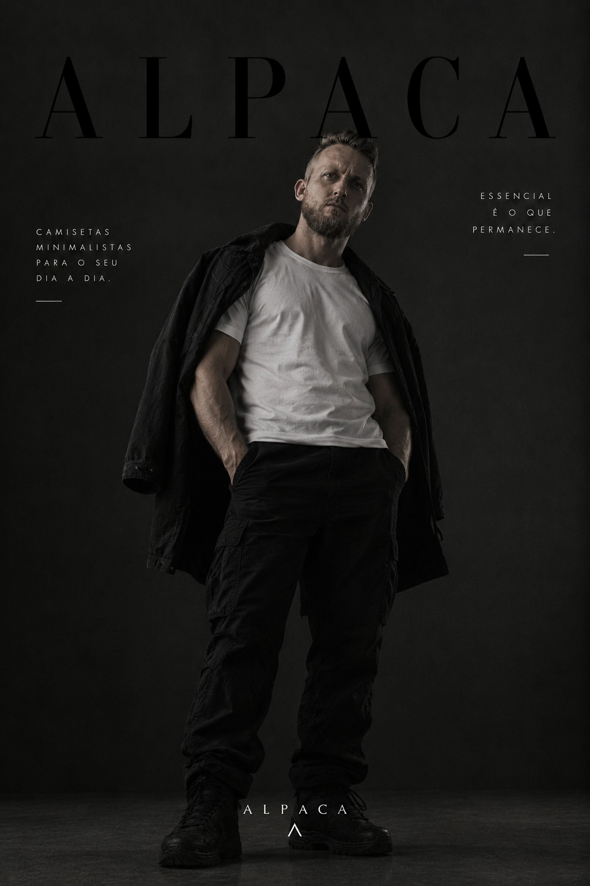

Faixa vertical.
O contraste percorre a frente da camiseta e define a identidade da LINE. Uma linha que dá direção à composição.
A LINE marca o primeiro lançamento da Alpaca. Uma coleção de camisetas, 21 combinações e a nossa assinatura em cada escolha.
Conheça o lançamento


A nossa primeira linha. A sua assinatura.
Apresentamos a LINE, o primeiro lançamento da Alpaca. Uma coleção de camisetas com uma identidade visual própria: faixa vertical, símbolo da marca e 21 combinações de cores.
A LINE inaugura os lançamentos da Alpaca. A ideia é direta: transformar uma camiseta em uma assinatura visual reconhecível, sem abrir mão de uma composição minimalista.
Uma base, diferentes contrastes. Do preto e branco aos tons mais expressivos, são 21 combinações para escolher como você quer vestir esse primeiro capítulo.
O contraste percorre a frente da camiseta e define a identidade da LINE. Uma linha que dá direção à composição.
Integrado à faixa, o símbolo da marca aparece como um detalhe de identidade. Nas costas, a proposta é visualmente limpa.
Neutros, tons terrosos e cores marcantes. Explore as variações abaixo e amplie cada imagem para comparar frente, costas e detalhes.
Explore as cores. Veja os detalhes. Escolha a sua assinatura.
Faixa vertical, contraste de cores e o símbolo Alpaca. Explore a coleção e encontre a combinação que tem a sua cara.
Preto / Rosa
Consulte tamanhos e disponibilidade nos canais da marca.
Explore as peças da nossa curadoria. Simplicidade na composição, personalidade no detalhe.
Malha escura e bordado discreto. Um essencial da curadoria.
Tons claros, detalhe na manga e presença sem excesso.
Uma base versátil para acompanhar o seu ritmo.
O lado esportivo da nossa seleção de streetwear.
Selecionamos, testamos e vestimos. Cada drop é uma coleção fechada: poucas peças, curadoria grande, zero estoque parado.
Conheça o conceito
ALPACA / ESTUDO DE PRESENÇAA nossa visão de streetwear começa na escolha. Uma peça precisa fazer sentido no corpo, na rotina e na forma como você se expressa.
Uma seleção com intenção. Espaço para o que você realmente quer vestir.
Caimento, textura e detalhes. Presença que não depende de gritar.
Peças para compor o seu dia. O estilo é seu; a curadoria é nossa.
Luz, forma e atitude.
O universo Alpaca em 15 perspectivas.
Selecionamos as peças em drops: coleções fechadas com uma proposta própria. Aqui você explora os detalhes e conhece o universo da Alpaca antes de escolher.
A seleção do site apresenta as peças da marca. Para saber quais tamanhos estão disponíveis, consulte os canais da Alpaca. A disponibilidade de cada peça pode mudar entre os drops.
A Alpaca é de Criciúma, Santa Catarina. Acompanhe os canais da marca para conhecer os próximos drops e combinar o atendimento.
Acompanhe as novidades, conheça a seleção e encontre a sua próxima peça.